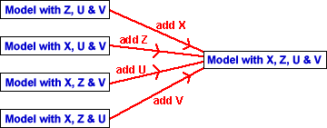

Effect of order on sequential sums of squares
We mentioned earlier a problem with marginal sums of squares — they give no information about whether two or more explanatory variables can be removed from the full model.

Sequential sums of squares have a similar limitation — they only give information about models with variables added in a single order,
If the variables are added in a different order, the sequential sums of squares can change considerably. This means that there are several different possible sums of squares tables.
Sequential sums of squares are therefore of most use when there is a good reason for adding variables in a particular order.
We will see some examples of this later.
Uncorrelated explanatory variables
The exception is when the explanatory variables are uncorrelated. This usually arises from a designed experiment.
With uncorrelated explanatory variables, the sequential sum of squares for a variable Z is the same whatever other explanatory variables and is also equal to its marginal sum of squares. As a result, there is only a single sum of squares table.
Oxygen uptake when running
The sum of squares table below shows sequential sums of squares when explanatory variables are added to the model in the order Weight, Running time, Resting heart rate, and Running heart rate.
The dark bars on the right illustrate the sizes of the sequential sums of squares. Each thin lighter bar with lighter colour also shows the variable's the marginal sum of squares.
Drag the red arrows to reorder the variables. Observe that:
The correlations between the explanatory variables make it relatively difficult to analyse the data.
Plasma etching
This data set arose from an experiment in which each of the four explanatory variables was given one of two possible values and one run of the experiment was conducted for each possible combination. Because of this experimental design, the explanatory variables are uncorrelated.
Drag to reorder the explanatory variables and observe that the sums of squares are not affected by the order.
A single sum of squares table fully shows the effects of adding variables in any order.
With uncorrelated explanatory variables, there is no need to use the notation "after xxx" when labelling the sums of squares.